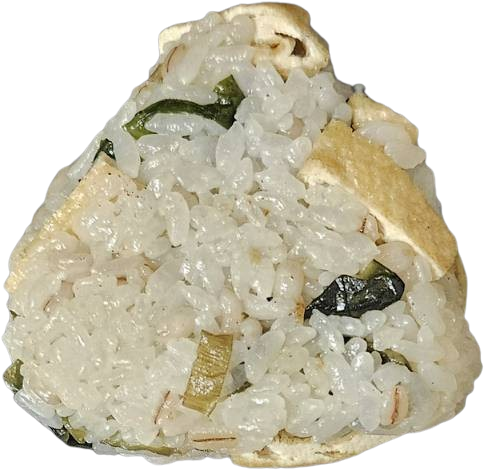
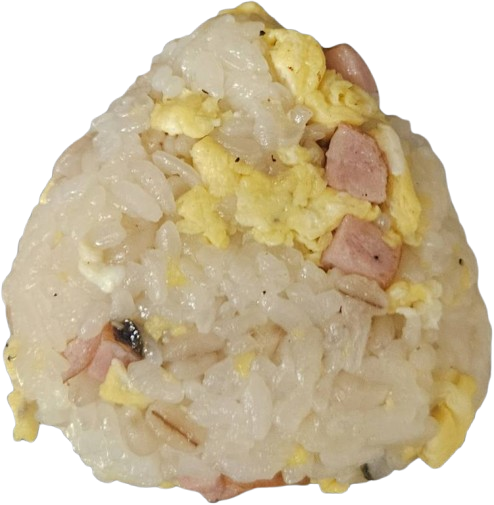
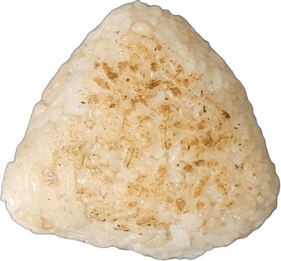

- トップ >
- おすすめおにぎりレシピ
おすすめおにぎりレシピ
作ったおにぎりの中でおすすめのおにぎりの簡単なレシピと味を投稿します！
ワカメとお揚げと佃煮のおにぎり

『ワカメとお揚げと佃煮のおにぎり 2つ分のレシピ』
| ワカメ | ひとつかみ |
|---|---|
| お揚げ | 25g |
| めんつゆ | 2秒 |
| お米 | お茶碗二杯分 |
| 昆布の佃煮 | お好みの量 （味が濃いものを使ったので私は少なめにしました） |
レシピ
①お揚げを2cmぐらいの長方形型に切る。
②お揚げ、ワカメをめんつゆで味付けしながら炒める。温める目的なので火は弱めで。
③火を止めてお米と②を混ぜ合わせる。
④中に昆布の佃煮を仕込んでおにぎりを握る。
昆布の佃煮がいいアクセントになっていて美味しいです。めんつゆを入れすぎるとべちゃっとしたおにぎりになってしまうので火を通して水気を飛ばすか、あまり入れないようにすることをおすすめします！
炒り卵とソーセージのおにぎり

『炒り卵とソーセージのおにぎり 2つ分のレシピ』
| 卵 | 1個 |
|---|---|
| ソーセージ | 2本 |
| ごま油 | 1秒 |
| お米 | お茶碗二杯分 |
| 塩コショウ | 2スナップ |
レシピ
①ソーセージを小さく切る。
②フライパンにごま油をしき、ソーセージを炒める。
③ソーセージの上に卵を落とし、塩コショウで味をととのえながら炒める。
④火を止めてお米と③を混ぜ合わせる。
⑤おにぎりを握る。
温めてもそのままでも美味しいです。ごま油が香りと味のアクセントになっていてよかったので、別の油でも問題ないですがごま油がおすすめです！
煮卵の焼きおにぎり

『煮卵の焼きおにぎり 1つ分のレシピ』
| 煮卵 | 1個 （少なめか細かくカットがおすすめ） |
|---|---|
| しょうゆ | 大さじ1 |
| みりん | 大さじ1/2 |
| 顆粒だし | 3スナップ |
| お米 | お茶碗一杯分 |
レシピ
①お米、しょうゆ、みりん、顆粒だしを混ぜ合わせる。
②中に煮卵を仕込んで①でおにぎりを握る。
③フライパンで両面焦げ目がつくまで②を焼く。
煮卵は1個丸まる握るのも夢があっていいですが、食べやすさ、握りやすさの点で小さく少なめがおすすめです！しっかり味があってとても美味しいです！！